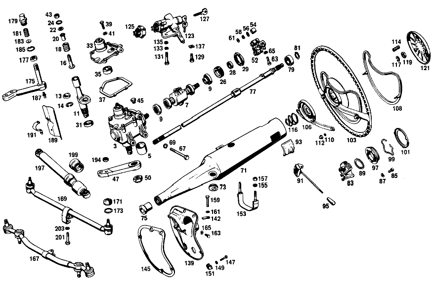

| № | Артикул | Название | Кол. | Примечание | Ограничение |
|---|---|---|---|---|---|
| 3 | A 111 460 43 01 | Рулевой механизм | 1 | Рулевое управление: Влево [697] ДЕТАЛЬ ПОСТАВЛЯЕТСЯ ТОЛЬКО/ИЛИ ТАКЖЕ КАК ЗАП.ЧАСТЬ | |
| 5 | A 111 462 03 50 | - втулка | 1 | ||
| 7 | A 309 460 03 08 | - Червяк рулевого механизма | 1 | Рулевое управление: Влево | |
| 9 | A 000 981 50 27 | - Подшипник | 2 | ||
| 11 | A 309 460 02 11 | - ВАЛ РУЛЕВОЙ | 1 | ДИАМЕТР: 30mm | |
| 13 | A 111 462 01 37 | - СФЕРИЧЕСКИЙ ВКЛАДЫШ | - | [403] НЕ УСТАНОВЛЕНО | |
| 14 | N 000472 030000 | - Стопорное кольцо | 1 | ||
| 16 | A 111 462 04 71 | - Палец | 1 | ||
| 18 | A 111 993 21 01 | - ПРУЖИНА | 1 | [002] FROM STEERING 091870 | |
| 20 | A 111 462 04 85 | - УПОР ПРИЖИМНОЙ | 1 | [002] FROM STEERING 091870 | |
| 22 | A 111 461 04 62 | - ШАЙБА УПОРНАЯ | 1 | ||
| 24 | A 004 994 92 41 | - предохранитель | 1 | ||
| 26 | A 111 461 04 06 | - Регулировочное кольцо | 1 | [008] FROM STEERING 187385 ALSO INSTALLED ON 155572-155772 | |
| 28 | A 002 997 47 46 | - Уплотнительное кольцо | 1 | [006] DELIVER ADDITIONANNY:UP TO STEERING 075322 1X111 461 02 06 | |
| 29 | A 120 990 05 51 | - Двенадцатигранная гайка | 1 | ||
| 31 | A 001 997 93 46 | - УПЛОТНИТ. КОЛЬЦО | 1 | [010] FROM STEERING 084625 | |
| 33 | A 111 460 08 14 | - КРЫШКА | 1 | Рулевое управление: Влево [012] FROM STEERING 010984 | |
| 35 | A 111 462 02 50 | - втулка | 1 | ||
| 37 | A 111 461 02 80 | - уплотнение | 1 | ||
| 39 | N 000933 008153 | - Винт | - | M8X25\-8.8 | |
| 39 | N 304017 008034 | - Винт с 6-гранной головкой | 4 | M8X25 | |
| 41 | N 000127 008200 | - КОЛЬЦО ПРУЖИННОЕ | 4 | ||
| 43 | N 000934 010014 | - Гайка | 1 | для ADJUSTING SCREW | |
| 45 | N 007604 012100 | - Резьбовая пробка | 1 | для ADJUSTING SCREW [012] FROM STEERING 010984 | |
| 47 | A 111 463 16 01 | РЫЧАГ НА РУЛЕВОЙ КОЛОНКЕ | 1 | Рулевое управление: ВлевоКоробка передач [035] NOT FOR USE WITH MERCEDES-BENZ HYDRAULIC-AUTOMATIC CLUTCH [014] 010 FROM CHASSIS 000237;012 FROM CHASSIS 000417 [015] 010 UP TO CHASSIS 023660 EXCEPT FOR,SEE FOOTNOTE 38;012 UP TO CHASSIS 049855 EXCEPT FOR,SEE FOOTNOTE 39 [038] 023626- 023628, 023631, 023633, 023636, 023639, 023640, 023642- 023644, 023646- 023649, 023651- 023659. [039] 048590, 049219, 049222, 049255, 049260, 049472, 049593, 049664, 049680, 049681, 049684, 049702, 049706, 049725, 049734, 049753, 049770, 049779, 049781, 049787, 049789, 049791, 049793- 049795, 049799- 049801, 049803- 049805, 049807- 049824, 049826- 049837, 049839- 049843, 049845- 049849, 049851- 049854. | |
| 47 | A 111 463 16 01 | РЫЧАГ НА РУЛЕВОЙ КОЛОНКЕ | 1 | Рулевое управление: ВлевоКоробка передач [015] 010 UP TO CHASSIS 023660 EXCEPT FOR,SEE FOOTNOTE 38;012 UP TO CHASSIS 049855 EXCEPT FOR,SEE FOOTNOTE 39 [038] 023626- 023628, 023631, 023633, 023636, 023639, 023640, 023642- 023644, 023646- 023649, 023651- 023659. [039] 048590, 049219, 049222, 049255, 049260, 049472, 049593, 049664, 049680, 049681, 049684, 049702, 049706, 049725, 049734, 049753, 049770, 049779, 049781, 049787, 049789, 049791, 049793- 049795, 049799- 049801, 049803- 049805, 049807- 049824, 049826- 049837, 049839- 049843, 049845- 049849, 049851- 049854. [037] ONLY FOR USE WITH MERCEDES-BENZ HYDRAULIC-AUTOMATIC CLUTCH | |
| 50 | N 000937 022000 | Гайка | 1 | ||
| 52 | A 111 460 03 10 | РУЛ. УПРАВЛ.-СЦЕПЛЕНИЕ | - | ||
| 54 | A 111 462 01 65 | - втулка | 2 | ||
| 56 | A 111 990 30 40 | - ШАЙБА | 2 | ||
| 58 | N 900055 010000 | - Пружинная шайба | 2 | ||
| 61 | A 136 990 95 40 | - ШАЙБА | 2 | ||
| 63 | A 111 990 04 20 | - БОЛТ | 2 | [018] FROM STEERING 150170 | |
| 65 | N 000127 008203 | - Пружинное кольцо | 2 | ||
| 67 | N 000931 010233 | Винт | 3 | STEERING TO FRAME FLOOR UNIT | |
| 69 | N 912004 010102 | Пружинное кольцо | 3 | STEERING TO FRAME FLOOR UNIT | |
| 71 | A 111 460 71 16 | ТРУБЧАТ. СЕКЦИЯ РУЛ. КОЛ. | 1 | Рулевое управление: Влево [020] 010 FROM CHASSIS 017604 ALSO INSTALLED ON,SEE FOOTNOTE 40;012 FROM CHASSIS 036825 ALSO INSTALLED ON,SEE FOOTNOTE 41 [040] 017529, 017569, 017573, 017574, 017576- 017582, 017584- 017590, 017592- 017594, 017596- 017602. [041] 035451, 036003- 036005, 036007- 036009, 036011- 036020, 036022- 036025, 036027- 036054, 036056- 036070, 036072- 036085, 036087- 036115, 036117- 036139, 036141- 036624, 036626- 036633, 036635, 036636, 036639, 036641- 036646, 036648- 036650, 036654, 036657, 036661, 036666, 036668, 036670- 036672, 036675, 036684, 036693, 036694, 036709, 036725, 036728, 036731, 036736, 036743, 036748, 036751, 036752, 036782, 036800. | |
| 73 | A 111 997 00 81 | КАБ. ВТУЛКА | 1 | для JACKET TUBE | |
| 75 | A 116 462 00 96 | Манжета | 1 | ||
| 77 | A 110 460 50 09 | ВАЛ РУЛЕВОЙ | 1 | SPECIAL REQUEST,MERCEDES\-BENZ POWER STEERING Рулевое управление: Влево | |
| 79 | N 000625 006004 | Шарикоподшипник | 1 | ||
| 81 | A 094 990 60 05 | Стопорное кольцо | 1 | ||
| 83 | A 111 462 06 28 | Опорная пластина | 1 | [020] 010 FROM CHASSIS 017604 ALSO INSTALLED ON,SEE FOOTNOTE 40;012 FROM CHASSIS 036825 ALSO INSTALLED ON,SEE FOOTNOTE 41 [040] 017529, 017569, 017573, 017574, 017576- 017582, 017584- 017590, 017592- 017594, 017596- 017602. [041] 035451, 036003- 036005, 036007- 036009, 036011- 036020, 036022- 036025, 036027- 036054, 036056- 036070, 036072- 036085, 036087- 036115, 036117- 036139, 036141- 036624, 036626- 036633, 036635, 036636, 036639, 036641- 036646, 036648- 036650, 036654, 036657, 036661, 036666, 036668, 036670- 036672, 036675, 036684, 036693, 036694, 036709, 036725, 036728, 036731, 036736, 036743, 036748, 036751, 036752, 036782, 036800. | |
| 85 | N 000912 006014 | Цилиндрич. винт | 2 | BASE PLATE TO JACKET TUBE | |
| 87 | N 000137 006100 | Пружинная шайба | - | ||
| 87 | N 000137 006204 | Пружинная шайба | 2 | BASE PLATE TO JACKET TUBE | |
| 89 | A 094 990 70 05 | Стопорное кольцо | 1 | GROOVED BALL BEARING IN BASE PLATE | |
| 91 | A 001 545 21 24 | ВЫКЛЮЧАТЕЛЬ АВТОМ. | 1 | для DIRECTION SIGNAL LIGHT AND OVERTAKING SIGNAL LIGHT | |
| 93 | A 111 462 06 96 | МАНЖЕТА | 1 | для BUILT\-IN SWITCH | |
| 95 | A 000 545 17 37 | КНОПКА | 1 | для BUILT\-IN SWITCH | |
| 97 | A 000 464 04 28 | КОЛЕСО КОНТАКТНОЕ | 1 | для HORN SIGNAL [028] 010 UP TO CHASSIS 066798;012 UP TO CHASSIS 152631 | |
| 99 | A 111 994 04 35 | СТОПОРН. КОЛЬЦО | 1 | для CONTACT RING [028] 010 UP TO CHASSIS 066798;012 UP TO CHASSIS 152631 | |
| 101 | A 110 464 00 34 | ДЕРЖАТЕЛЬ | 1 | для CONTACT RING [028] 010 UP TO CHASSIS 066798;012 UP TO CHASSIS 152631 | |
| 103 | A 112 460 02 03 | Рулевое колесо | 1 | DARK GRAPHITE GREY,без HUB PAD | |
| 106 | A 111 464 06 36 | - СТУПИЦА | 1 | DARK GRAPHITE GREY [028] 010 UP TO CHASSIS 066798;012 UP TO CHASSIS 152631 | |
| 108 | A 100 464 01 15 | - КОЛЬЦО СИГНАЛЬНОЕ | 1 | ||
| 110 | A 111 464 00 73 | - ПРЕДОХРАНИТЕЛЬ | 2 | [417] БОЛЬШЕ НЕ ПОСТАВЛЯЕТСЯ, ЗАКАЗЫВАТЬ КОМПЛЕКТ ПОСТАВКИ | |
| 112 | A 111 464 01 72 | - гайка | 2 | ||
| 114 | A 111 464 00 24 | - втулка | 3 | для HUB PAD | |
| 116 | A 111 993 24 01 | ПРУЖИНА | 1 | РУЛ. КОЛЕСО НА РУЛ. ВАЛУ [028] 010 UP TO CHASSIS 066798;012 UP TO CHASSIS 152631 | |
| 117 | N 912004 014100 | Пружинное кольцо | 1 | РУЛ. КОЛЕСО НА РУЛ. ВАЛУ | |
| 119 | N 000936 014010 | Гайка | - | ||
| 119 | N 308675 014000 | Шестигранная гайка | - | ||
| 119 | N 308675 014002 | Шестигранная гайка | 1 | РУЛ. КОЛЕСО НА РУЛ. ВАЛУ; M14X1.5\-05 | |
| 121 | A 111 460 06 42 | ПЛАСТИНА НАКЛАДНАЯ | 1 | ЧЕРНЫЙ | |
| 123 | A 000 462 24 30 | ЗАМОК РУЛЕВОГО УПРАВЛЕНИЯ | 1 | Рулевое управление: Влево [020] 010 FROM CHASSIS 017604 ALSO INSTALLED ON,SEE FOOTNOTE 40;012 FROM CHASSIS 036825 ALSO INSTALLED ON,SEE FOOTNOTE 41 [040] 017529, 017569, 017573, 017574, 017576- 017582, 017584- 017590, 017592- 017594, 017596- 017602. [041] 035451, 036003- 036005, 036007- 036009, 036011- 036020, 036022- 036025, 036027- 036054, 036056- 036070, 036072- 036085, 036087- 036115, 036117- 036139, 036141- 036624, 036626- 036633, 036635, 036636, 036639, 036641- 036646, 036648- 036650, 036654, 036657, 036661, 036666, 036668, 036670- 036672, 036675, 036684, 036693, 036694, 036709, 036725, 036728, 036731, 036736, 036743, 036748, 036751, 036752, 036782, 036800. | |
| 125 | A 000 462 06 93 | - Переключатель | 1 | с STARTER NON\-REPEAT UNIT [049] FROM CHASSIS:010 10/50,12/52 038270,20/60,22/62 039019; 012 10/50,12/52 082142,20/60,22/62 038739 | |
| 127 | A 111 462 01 32 | - КЛЮЧ | 2 | [402] БОЛЬШЕ НЕ ПОСТАВЛЯЕТСЯ | |
| 129 | N 000933 008154 | Винт | - | ||
| 129 | N 304017 008021 | Винт с 6-гранной головкой | 1 | M8X20 | |
| 131 | N 000931 008244 | Винт | 1 | STEERING LOCK TO CROSS MEMBER | |
| 133 | N 000127 008200 | КОЛЬЦО ПРУЖИННОЕ | 2 | STEERING LOCK TO CROSS MEMBER | |
| 135 | N 000125 008407 | ШАЙБА | 2 | STEERING LOCK TO CROSS MEMBER | |
| 137 | A 111 461 01 75 | ШАЙБА | 1 | STEERING LOCK TO CROSS MEMBER | |
| 139 | A 111 462 29 95 | ПАНЕЛЬ | 1 | ДЛЯ ВЫВОДА ПРОВОДА Рулевое управление: Влево [035] NOT FOR USE WITH MERCEDES-BENZ HYDRAULIC-AUTOMATIC CLUTCH [020] 010 FROM CHASSIS 017604 ALSO INSTALLED ON,SEE FOOTNOTE 40;012 FROM CHASSIS 036825 ALSO INSTALLED ON,SEE FOOTNOTE 41 [040] 017529, 017569, 017573, 017574, 017576- 017582, 017584- 017590, 017592- 017594, 017596- 017602. [041] 035451, 036003- 036005, 036007- 036009, 036011- 036020, 036022- 036025, 036027- 036054, 036056- 036070, 036072- 036085, 036087- 036115, 036117- 036139, 036141- 036624, 036626- 036633, 036635, 036636, 036639, 036641- 036646, 036648- 036650, 036654, 036657, 036661, 036666, 036668, 036670- 036672, 036675, 036684, 036693, 036694, 036709, 036725, 036728, 036731, 036736, 036743, 036748, 036751, 036752, 036782, 036800. | |
| 142 | A 111 462 08 80 | ПРОКЛАДКА УПЛОТНИТЕЛЬНАЯ | 1 | для COVER PLATE | |
| 145 | A 111 462 13 80 | Уплотнительная прокладка | 1 | COVER PLATE TO FIRE WALL Рулевое управление: Влево | |
| 147 | N 000931 006016 | БОЛТ | 6 | COVER PLATE TO FIRE WALL | |
| 149 | N 009021 006103 | Шайба | - | ||
| 149 | N 009021 006208 | Шайба | 6 | COVER PLATE TO FIRE WALL; 6 MM | |
| 151 | A 000 990 27 91 | ГАЙКОДЕРЖАТЕЛЬ | - | ||
| 151 | A 000 990 22 91 | ГАЙКОДЕРЖАТЕЛЬ | - | ||
| 151 | A 001 990 67 91 | Гайкодержатель | 6 | COVER PLATE TO FIRE WALL [415] ПРИМЕЧ. ПО ЗАМЕНЕ ПРИМЕНИМО ТОЛЬКО ДЛЯ СТОЯЩИХ РЯДОМ ПОЗИЦИЙ | |
| 153 | A 111 460 06 65 | ЛЕНТА НАТЯЖНАЯ | 1 | ТРУБА РУЛ. КОЛОНКИ НА ТРАВЕРСЕ | |
| 155 | N 000125 008407 | ШАЙБА | 2 | ДЛЯ СТЯЖНОГО ХОМУТА | |
| 157 | N 000985 008001 | ГАЙКА | 2 | ДЛЯ СТЯЖНОГО ХОМУТА | |
| 159 | N 000933 008119 | Винт | - | ||
| 159 | N 304017 008042 | Винт с 6-гранной головкой | 1 | COVER PLATE TO JACKET TUBE | |
| 161 | N 000137 008204 | Пружинная шайба | - | ||
| 161 | N 000137 008212 | Пружинная шайба | 1 | COVER PLATE TO JACKET TUBE | |
| 163 | N 000561 006103 | Винт | 1 | COVER PLATE TO JACKET TUBE | |
| 165 | N 000137 006204 | Пружинная шайба | 1 | COVER PLATE TO JACKET TUBE | |
| 167 | A 111 460 19 05 | ТЯГА РУЛЕВАЯ | 1 | Рулевое управление: ВлевоКоробка передач [035] NOT FOR USE WITH MERCEDES-BENZ HYDRAULIC-AUTOMATIC CLUTCH [014] 010 FROM CHASSIS 000237;012 FROM CHASSIS 000417 [015] 010 UP TO CHASSIS 023660 EXCEPT FOR,SEE FOOTNOTE 38;012 UP TO CHASSIS 049855 EXCEPT FOR,SEE FOOTNOTE 39 [038] 023626- 023628, 023631, 023633, 023636, 023639, 023640, 023642- 023644, 023646- 023649, 023651- 023659. [039] 048590, 049219, 049222, 049255, 049260, 049472, 049593, 049664, 049680, 049681, 049684, 049702, 049706, 049725, 049734, 049753, 049770, 049779, 049781, 049787, 049789, 049791, 049793- 049795, 049799- 049801, 049803- 049805, 049807- 049824, 049826- 049837, 049839- 049843, 049845- 049849, 049851- 049854. | |
| 167 | A 111 460 19 05 | ТЯГА РУЛЕВАЯ | 1 | Рулевое управление: ВлевоКоробка передач [015] 010 UP TO CHASSIS 023660 EXCEPT FOR,SEE FOOTNOTE 38;012 UP TO CHASSIS 049855 EXCEPT FOR,SEE FOOTNOTE 39 [038] 023626- 023628, 023631, 023633, 023636, 023639, 023640, 023642- 023644, 023646- 023649, 023651- 023659. [039] 048590, 049219, 049222, 049255, 049260, 049472, 049593, 049664, 049680, 049681, 049684, 049702, 049706, 049725, 049734, 049753, 049770, 049779, 049781, 049787, 049789, 049791, 049793- 049795, 049799- 049801, 049803- 049805, 049807- 049824, 049826- 049837, 049839- 049843, 049845- 049849, 049851- 049854. [037] ONLY FOR USE WITH MERCEDES-BENZ HYDRAULIC-AUTOMATIC CLUTCH | |
| 169 | A 110 460 02 05 | Рулевая тяга | 1 | [016] 10 FROM CHASSIS 023661 ALSO INSTALLED ON,SEE FOOTNOTE 38;012 FROM CHASSIS 049856 ALSO INSTALLED ON,SEE FOOTNOTE 39 [038] 023626- 023628, 023631, 023633, 023636, 023639, 023640, 023642- 023644, 023646- 023649, 023651- 023659. [039] 048590, 049219, 049222, 049255, 049260, 049472, 049593, 049664, 049680, 049681, 049684, 049702, 049706, 049725, 049734, 049753, 049770, 049779, 049781, 049787, 049789, 049791, 049793- 049795, 049799- 049801, 049803- 049805, 049807- 049824, 049826- 049837, 049839- 049843, 049845- 049849, 049851- 049854. | |
| 171 | A 000 338 13 97 | - Эластомерная манжета | 2 | Коробка передач [015] 010 UP TO CHASSIS 023660 EXCEPT FOR,SEE FOOTNOTE 38;012 UP TO CHASSIS 049855 EXCEPT FOR,SEE FOOTNOTE 39 [038] 023626- 023628, 023631, 023633, 023636, 023639, 023640, 023642- 023644, 023646- 023649, 023651- 023659. [039] 048590, 049219, 049222, 049255, 049260, 049472, 049593, 049664, 049680, 049681, 049684, 049702, 049706, 049725, 049734, 049753, 049770, 049779, 049781, 049787, 049789, 049791, 049793- 049795, 049799- 049801, 049803- 049805, 049807- 049824, 049826- 049837, 049839- 049843, 049845- 049849, 049851- 049854. | |
| 173 | A 000 338 09 63 | - Стяжное кольцо | - | Коробка передач [033] NO LONGER AVAILABLE INDIVIDUALLY;INSTEAD:114 586 01 33 | |
| 175 | A 111 460 23 19 | РЫЧАГ ПРОМЕЖУТОЧНЫЙ | 1 | Рулевое управление: Влево [016] 10 FROM CHASSIS 023661 ALSO INSTALLED ON,SEE FOOTNOTE 38;012 FROM CHASSIS 049856 ALSO INSTALLED ON,SEE FOOTNOTE 39 [038] 023626- 023628, 023631, 023633, 023636, 023639, 023640, 023642- 023644, 023646- 023649, 023651- 023659. [039] 048590, 049219, 049222, 049255, 049260, 049472, 049593, 049664, 049680, 049681, 049684, 049702, 049706, 049725, 049734, 049753, 049770, 049779, 049781, 049787, 049789, 049791, 049793- 049795, 049799- 049801, 049803- 049805, 049807- 049824, 049826- 049837, 049839- 049843, 049845- 049849, 049851- 049854. | |
| 177 | A 111 463 00 60 | Уплотнительное кольцо | 1 | INTERMEDIATE STEERING ARM TO PIVOT PIN | |
| 179 | A 111 463 01 33 | Запорная крышка | 1 | INTERMEDIATE STEERING ARM TO PIVOT PIN | |
| 181 | A 111 993 04 01 | Нажимная пружина | 1 | INTERMEDIATE STEERING ARM TO PIVOT PIN | |
| 183 | A 111 463 00 62 | Прижимная шайба | 1 | INTERMEDIATE STEERING ARM TO PIVOT PIN | |
| 185 | A 181 994 00 10 | Стопорная шайба | 1 | INTERMEDIATE STEERING ARM TO PIVOT PIN | |
| 187 | N 071412 008101 | ПРЕСС-МАСЛЁНКА | - | ||
| 187 | N 071412 008102 | Пресс-масленка | 1 | ||
| 189 | A 111 463 00 90 | ЗАЩИТНАЯ ПАНЕЛЬ | 1 | для STEERING INTERMEDIATE LEVER MOUNTING Рулевое управление: Влево [035] NOT FOR USE WITH MERCEDES-BENZ HYDRAULIC-AUTOMATIC CLUTCH | |
| 191 | A 111 463 11 40 | Держатель | 1 | для STEERING INTERMEDIATE LEVER MOUNTING Рулевое управление: Влево [035] NOT FOR USE WITH MERCEDES-BENZ HYDRAULIC-AUTOMATIC CLUTCH | |
| 194 | A 120 990 01 55 | гайка | 2 | DRAG LINK AND TIE ROD TO PITMAN ARM Коробка передач [015] 010 UP TO CHASSIS 023660 EXCEPT FOR,SEE FOOTNOTE 38;012 UP TO CHASSIS 049855 EXCEPT FOR,SEE FOOTNOTE 39 [038] 023626- 023628, 023631, 023633, 023636, 023639, 023640, 023642- 023644, 023646- 023649, 023651- 023659. [039] 048590, 049219, 049222, 049255, 049260, 049472, 049593, 049664, 049680, 049681, 049684, 049702, 049706, 049725, 049734, 049753, 049770, 049779, 049781, 049787, 049789, 049791, 049793- 049795, 049799- 049801, 049803- 049805, 049807- 049824, 049826- 049837, 049839- 049843, 049845- 049849, 049851- 049854. | |
| 194 | A 120 990 01 55 | гайка | 4 | DRAG LINK AND TIE ROD TO PITMAN ARM [016] 10 FROM CHASSIS 023661 ALSO INSTALLED ON,SEE FOOTNOTE 38;012 FROM CHASSIS 049856 ALSO INSTALLED ON,SEE FOOTNOTE 39 [038] 023626- 023628, 023631, 023633, 023636, 023639, 023640, 023642- 023644, 023646- 023649, 023651- 023659. [039] 048590, 049219, 049222, 049255, 049260, 049472, 049593, 049664, 049680, 049681, 049684, 049702, 049706, 049725, 049734, 049753, 049770, 049779, 049781, 049787, 049789, 049791, 049793- 049795, 049799- 049801, 049803- 049805, 049807- 049824, 049826- 049837, 049839- 049843, 049845- 049849, 049851- 049854. | |
| 197 | A 000 463 51 32 | Амортизатор | 1 | (ДЕМПФЕР РУЛ. УПРАВЛ.) | |
| 199 | A 110 463 01 96 | - МАНЖЕТА | 1 | [034] TO 000 463 35 32 | |
| 201 | N 000960 010026 | Винт | - | ||
| 201 | N 000961 010031 | Винт | 1 | STEERING SHOCK ABSORBER TO DRAG LINK | |
| 203 | N 912004 010102 | Пружинное кольцо | 1 | STEERING SHOCK ABSORBER TO DRAG LINK | |
| 205 | A 111 460 40 01 | РУЛЕВОЕ УПРАВЛЕНИЕ | - | Рулевое управление: Влево | |
| 207 | A 112 460 12 02 | - КОРПУС | - | Рулевое управление: Влево | |
| 207 | A 109 460 04 02 | - КОРПУС | 1 | Рулевое управление: Влево | |
| 209 | A 001 997 02 45 | - Уплотнительное кольцо | - | ||
| 209 | A 013 997 36 48 | - УПЛОТНИТ. КОЛЬЦО | 1 | ||
| 211 | A 000 981 82 10 | - Игольчатый подшипник | 1 | ||
| 213 | A 001 997 25 45 | - Уплотнительное кольцо | 5 | ||
| 215 | A 112 997 00 30 | - Резьбовая пробка | 1 | ||
| 217 | A 000 997 87 20 | - Уплотнительное кольцо | 1 | ||
| 219 | N 007604 010102 | - Резьбовая пробка | - | ||
| 219 | N 007604 010108 | - Резьбовая пробка | 1 | [402] БОЛЬШЕ НЕ ПОСТАВЛЯЕТСЯ [022] 010 FROM CHASSIS 032057;012 FROM CHASSIS 068051 ALSO INSTALLED ON 067870-067952 | |
| 221 | N 007603 010100 | - Уплотнительное кольцо | 1 | 10X13.5 AL [022] 010 FROM CHASSIS 032057;012 FROM CHASSIS 068051 ALSO INSTALLED ON 067870-067952 | |
| 223 | A 112 460 28 85 | - ПОРШЕНЬ | 1 | с STEERING WORM AND SLEEVE VALVE Рулевое управление: Влево | |
| 225 | A 112 460 11 14 | - КРЫШКА | - | Рулевое управление: Влево | |
| 225 | A 112 460 20 14 | - КРЫШКА | 1 | Рулевое управление: Влево | |
| 227 | A 001 997 26 45 | - УПЛОТНИТ. КОЛЬЦО | - | ||
| 227 | A 014 997 61 48 | - Уплотнительное кольцо | 1 | ||
| 229 | A 112 460 00 61 | - Уплотнительное кольцо | 1 | ||
| 231 | A 112 462 01 62 | - ШАЙБА УПОРНАЯ | 1 | ||
| 233 | A 000 994 26 41 | - ПРЕДОХРАНИТЕЛЬ | 1 | ||
| 235 | A 112 461 01 62 | - ШАЙБА УПОРНАЯ | 1 | ||
| 237 | A 000 981 04 18 | - ПОДШИПНИК РОЛИКОВЫЙ | 2 | ||
| 240 | A 000 981 63 10 | - Игольчатый подшипник | 1 | ||
| 242 | A 112 460 03 86 | - РЕЗЬБ. ПАТРОН | 1 | ||
| 244 | A 000 997 97 45 | - Уплотнительное кольцо | 1 | ||
| 246 | A 005 997 58 46 | - Уплотнительное кольцо | 1 | ||
| 247 | A 001 997 40 40 | - Уплотнительное кольцо | 1 | ||
| 249 | A 000 994 26 41 | - ПРЕДОХРАНИТЕЛЬ | 1 | ||
| 251 | A 120 990 05 51 | - Двенадцатигранная гайка | 1 | ||
| 253 | A 112 995 00 20 | - ХОМУТ | 1 | для BALL GUIDE | |
| 255 | A 120 990 05 20 | - болт | 1 | для BALL GUIDE | |
| 257 | A 112 994 00 05 | - Стопорная шайба | 1 | для BALL GUIDE | |
| 259 | A 112 460 15 85 | - ПОРШЕНЬ | 1 | Рулевое управление: Влево | |
| 261 | A 000 981 24 27 | - РАД.-УПОРН. ПОДШИПНИК | - | ||
| 263 | A 112 466 01 73 | - Стопорное кольцо | 1 | ||
| 265 | A 000 981 40 27 | - РАД.-УПОРН. ПОДШИПНИК | 1 | ||
| 267 | A 112 466 19 05 | - КРЫШКА | 1 | ||
| 269 | A 112 466 01 34 | - КОЛЬЦО РЕЗЬБОВОЕ | 1 | ||
| 271 | A 112 466 01 60 | - Уплотнительное кольцо | 1 | ||
| 273 | A 004 997 44 45 | - Уплотнительное кольцо | 1 | КРЫШКА ОПОРЫ НА КОРПУСЕ РУЛ.МЕХ. | |
| 275 | A 112 993 95 01 | - пружина | 2 | ||
| 277 | A 112 466 04 62 | - ШАЙБА УПОРНАЯ | 2 | ПО НЕОБХОДИМОСТИ 1.0 MM [402] БОЛЬШЕ НЕ ПОСТАВЛЯЕТСЯ | |
| 282 | A 000 994 38 41 | - ПРЕДОХРАНИТЕЛЬ | 2 | ||
| 284 | A 112 991 01 41 | - ШТИФТ | 2 | ||
| 286 | A 112 466 02 75 | - ШАЙБА | 2 | ||
| 288 | A 112 993 19 02 | - ПРУЖИНА | 1 | ||
| 290 | A 000 994 54 41 | - ПРЕДОХРАНИТЕЛЬ | 1 | ||
| 292 | N 000933 010105 | - Винт | 4 | КРЫШКА ОПОРЫ НА КОРПУСЕ РУЛ.МЕХ. | |
| 294 | N 000127 010200 | - Пружинное кольцо | 4 | КРЫШКА ОПОРЫ НА КОРПУСЕ РУЛ.МЕХ. | |
| 296 | A 000 420 08 55 | - Клапан выпуска воздуха | 1 | ||
| 298 | A 000 421 71 87 | - КОЛПАЧОК | - | ||
| 298 | A 000 421 08 87 | - Защитный колпачок | 1 | ||
| 300 | A 112 466 11 05 | - КРЫШКА | 1 | ||
| 302 | A 112 466 12 05 | - КРЫШКА | 1 | СВЕРХУ Рулевое управление: Влево | |
| 304 | A 112 997 17 72 | - Штуцер | 1 | ||
| 305 | N 007603 014100 | - Уплотнительное кольцо | 1 | 14X18\-AL | |
| 307 | A 112 466 03 80 | - уплотнение | 1 | ||
| 309 | A 112 997 21 72 | - ШТУЦЕР | 1 | [022] 010 FROM CHASSIS 032057;012 FROM CHASSIS 068051 ALSO INSTALLED ON 067870-067952 | |
| 311 | A 005 997 98 45 | - Уплотнительное кольцо | 1 | ||
| 313 | A 112 460 05 11 | - ВАЛ РУЛЕВОЙ | 1 | ||
| 315 | A 111 462 04 71 | - Палец | 1 | ||
| 317 | A 111 993 21 01 | - ПРУЖИНА | 1 | ||
| 319 | A 111 462 04 85 | - УПОР ПРИЖИМНОЙ | 1 | ||
| 321 | A 111 461 04 62 | - ШАЙБА УПОРНАЯ | 1 | ||
| 323 | A 004 994 92 41 | - предохранитель | 1 | ||
| 324 | A 109 460 02 15 | - КРЫШКА | 1 | Рулевое управление: Влево | |
| 326 | A 001 997 02 45 | - Уплотнительное кольцо | - | ||
| 326 | A 013 997 36 48 | - УПЛОТНИТ. КОЛЬЦО | 1 | ||
| 328 | A 000 981 81 10 | - Игольчатый подшипник | 1 | ||
| 330 | A 005 997 59 46 | - Уплотнительное кольцо | 1 | ||
| 332 | A 001 997 39 40 | - Уплотнительное кольцо | 1 | ||
| 334 | A 000 994 53 41 | - Стопорное кольцо | 1 | ||
| 336 | A 002 997 47 45 | - Уплотнительное кольцо | 1 | COVER TO STEERING BOX | |
| 338 | A 004 997 44 45 | - Уплотнительное кольцо | 1 | COVER TO STEERING BOX | |
| 340 | A 112 993 97 01 | - пружина | 1 | COVER TO STEERING BOX | |
| 342 | N 000912 008096 | - Винт | - | ||
| 342 | N 000912 008202 | - Цилиндрич. винт | 6 | COVER TO STEERING BOX | |
| 344 | N 000137 008100 | - Пружинная шайба | 6 | COVER TO STEERING BOX | |
| 346 | A 112 466 01 72 | - ГАЙКА | 1 | STEERING SHAFT TO STEERING BOX | |
| 348 | A 001 997 01 45 | - Уплотнительное кольцо | 1 | STEERING SHAFT TO STEERING BOX | |
| 351 | N 007603 010100 | - Уплотнительное кольцо | 2 | STEERING SHAFT TO STEERING BOX; 10X13.5 AL | |
| 353 | A 108 990 00 51 | - ГАЙКА | 1 | STEERING SHAFT TO STEERING BOX | |
| 355 | N 001587 010000 | - ГЛУХАЯ ГАЙКА | 1 | STEERING SHAFT TO STEERING BOX | |
| 357 | A 112 463 16 01 | РЫЧАГ НА РУЛЕВОЙ КОЛОНКЕ | 1 | Рулевое управление: Влево [016] 10 FROM CHASSIS 023661 ALSO INSTALLED ON,SEE FOOTNOTE 38;012 FROM CHASSIS 049856 ALSO INSTALLED ON,SEE FOOTNOTE 39 [038] 023626- 023628, 023631, 023633, 023636, 023639, 023640, 023642- 023644, 023646- 023649, 023651- 023659. [039] 048590, 049219, 049222, 049255, 049260, 049472, 049593, 049664, 049680, 049681, 049684, 049702, 049706, 049725, 049734, 049753, 049770, 049779, 049781, 049787, 049789, 049791, 049793- 049795, 049799- 049801, 049803- 049805, 049807- 049824, 049826- 049837, 049839- 049843, 049845- 049849, 049851- 049854. | |
| 359 | N 000937 022000 | Гайка | 1 | PITMAN ARM TO STEERING SHAFT | |
| 361 | A 112 460 00 19 | РЫЧАГ ПРОМЕЖУТОЧНЫЙ | 1 | Рулевое управление: Влево [016] 10 FROM CHASSIS 023661 ALSO INSTALLED ON,SEE FOOTNOTE 38;012 FROM CHASSIS 049856 ALSO INSTALLED ON,SEE FOOTNOTE 39 [038] 023626- 023628, 023631, 023633, 023636, 023639, 023640, 023642- 023644, 023646- 023649, 023651- 023659. [039] 048590, 049219, 049222, 049255, 049260, 049472, 049593, 049664, 049680, 049681, 049684, 049702, 049706, 049725, 049734, 049753, 049770, 049779, 049781, 049787, 049789, 049791, 049793- 049795, 049799- 049801, 049803- 049805, 049807- 049824, 049826- 049837, 049839- 049843, 049845- 049849, 049851- 049854. | |
| 363 | A 180 460 01 80 | НАСОС ГИДРАВЛ. | - | ||
| 365 | A 000 991 06 68 | - Призматическая шпонка | 1 | ||
| 367 | A 000 236 00 71 | - БОЛТ | 3 | PUMP COVER TO PUMP HOUSING | |
| 369 | A 001 990 43 01 | - болт | 1 | PUMP COVER TO PUMP HOUSING | |
| 372 | A 180 460 00 83 | МАСЛЯНЫЙ БАЧОК | 1 | [035] NOT FOR USE WITH MERCEDES-BENZ HYDRAULIC-AUTOMATIC CLUTCH [024] 010,10/20 FROM CHASSIS 047544;010,12/22 FROM CHASSIS 047523;012,10/20 FROM CHASSIS 103834;012,12/22 FROM CHASSIS 103937 | |
| 374 | A 000 990 41 33 | - БОЛТ | - | ||
| 374 | N 000931 006172 | - Винт | 1 | ||
| 376 | A 000 466 03 73 | - Стопорная шайба | 1 | ||
| 378 | A 000 236 00 55 | - Фильтр | 1 | ||
| 380 | A 000 236 00 76 | - Крышка | 1 | ||
| 382 | A 001 993 14 01 | - пружина | 1 | ||
| 384 | A 000 460 12 82 | - КРЫШКА | 1 | ||
| 386 | A 000 236 00 80 | - Уплотнительная прокладка | 1 | ||
| 388 | N 000315 006000 | - ГАЙКА | 1 | ||
| 390 | N 000933 991001 | - БОЛТ | 2 | OIL TANK TO PUMP [023] 010,10/20 UP TO CHASSIS 047543;010,12/22 UP TO CHASSIS 047522;012,10/20 UP TO CHASSIS 103833;012,12/22 UP TO CHASSIS 103936 | |
| 390 | N 000933 991001 | БОЛТ | 1 | OIL TANK TO PUMP [035] NOT FOR USE WITH MERCEDES-BENZ HYDRAULIC-AUTOMATIC CLUTCH [024] 010,10/20 FROM CHASSIS 047544;010,12/22 FROM CHASSIS 047523;012,10/20 FROM CHASSIS 103834;012,12/22 FROM CHASSIS 103937 | |
| 392 | N 006797 006140 | - Зубчатая шайба | 1 | OIL TANK TO PUMP [035] NOT FOR USE WITH MERCEDES-BENZ HYDRAULIC-AUTOMATIC CLUTCH [024] 010,10/20 FROM CHASSIS 047544;010,12/22 FROM CHASSIS 047523;012,10/20 FROM CHASSIS 103834;012,12/22 FROM CHASSIS 103937 | |
| 394 | A 000 990 25 12 | - БОЛТ | 1 | с THROUGH HOLE OIL TANK TO PUMP [402] БОЛЬШЕ НЕ ПОСТАВЛЯЕТСЯ [035] NOT FOR USE WITH MERCEDES-BENZ HYDRAULIC-AUTOMATIC CLUTCH [024] 010,10/20 FROM CHASSIS 047544;010,12/22 FROM CHASSIS 047523;012,10/20 FROM CHASSIS 103834;012,12/22 FROM CHASSIS 103937 | |
| 396 | A 000 997 01 45 | - УПЛОТНИТ. КОЛЬЦО | 3 | OIL TANK TO PUMP [402] БОЛЬШЕ НЕ ПОСТАВЛЯЕТСЯ [023] 010,10/20 UP TO CHASSIS 047543;010,12/22 UP TO CHASSIS 047522;012,10/20 UP TO CHASSIS 103833;012,12/22 UP TO CHASSIS 103936 | |
| 396 | A 000 997 01 45 | УПЛОТНИТ. КОЛЬЦО | 1 | OIL TANK TO PUMP [402] БОЛЬШЕ НЕ ПОСТАВЛЯЕТСЯ [035] NOT FOR USE WITH MERCEDES-BENZ HYDRAULIC-AUTOMATIC CLUTCH [024] 010,10/20 FROM CHASSIS 047544;010,12/22 FROM CHASSIS 047523;012,10/20 FROM CHASSIS 103834;012,12/22 FROM CHASSIS 103937 | |
| 398 | A 000 997 72 45 | - УПЛОТНИТ. КОЛЬЦО | 1 | OIL TANK TO PUMP [035] NOT FOR USE WITH MERCEDES-BENZ HYDRAULIC-AUTOMATIC CLUTCH [024] 010,10/20 FROM CHASSIS 047544;010,12/22 FROM CHASSIS 047523;012,10/20 FROM CHASSIS 103834;012,12/22 FROM CHASSIS 103937 | |
| 401 | A 180 460 07 35 | ДЕРЖАТЕЛЬ | - | ||
| 401 | A 108 460 00 35 | ДЕРЖАТЕЛЬ | 1 | [026] 010,10/20 FROM CHASSIS 039495;010 WITH MERCEDES-BENZ HYDRAULIC-AUTOMATIC CLUTCH AND 12/22 FROM CHASSIS 039460;012,10/20 FROM CHASSIS 084975; [043] 012 WITH MERCEDES-BENZ HYDRAULIC-AUTOMATIC CLUTCH AND 12/22 FROM CHASSIS 085057 | |
| 403 | N 000912 010043 | Винт | 2 | КРОНШТЕЙН К БЛОКУ ЦИЛИНДРОВ | |
| 405 | N 912004 010102 | Пружинное кольцо | 2 | КРОНШТЕЙН К БЛОКУ ЦИЛИНДРОВ | |
| 407 | N 000433 010505 | Шайба | 2 | КРОНШТЕЙН К БЛОКУ ЦИЛИНДРОВ | |
| 409 | N 000912 008111 | Цилиндрич. винт | - | ||
| 409 | N 000000 000190 | Цилиндрич. винт | 1 | КРОНШТЕЙН НА МАСЛЯНОМ КАРТЕРЕ | |
| 411 | N 000127 008203 | Пружинное кольцо | 1 | КРОНШТЕЙН НА МАСЛЯНОМ КАРТЕРЕ | |
| 413 | N 000433 008406 | Шайба | 1 | КРОНШТЕЙН НА МАСЛЯНОМ КАРТЕРЕ | |
| 415 | A 180 155 08 51 | Проставочное кольцо | 1 | КРОНШТЕЙН НА МАСЛЯНОМ КАРТЕРЕ | |
| 417 | N 000933 010145 | Винт | 2 | НАПОРНЫЙ МАСЛЯНЫЙ НАСОС НА КРОНШТЕЙНЕ | |
| 419 | N 000125 010504 | ШАЙБА | 4 | НАПОРНЫЙ МАСЛЯНЫЙ НАСОС НА КРОНШТЕЙНЕ | |
| 421 | A 180 466 00 74 | БОЛТ НАТЯЖНОЙ | 1 | НАПОРНЫЙ МАСЛЯНЫЙ НАСОС НА КРОНШТЕЙНЕ | |
| 423 | A 127 466 00 73 | ПРЕДОХРАНИТЕЛЬ | 2 | НАПОРНЫЙ МАСЛЯНЫЙ НАСОС НА КРОНШТЕЙНЕ | |
| 425 | N 000934 010014 | Гайка | 2 | НАПОРНЫЙ МАСЛЯНЫЙ НАСОС НА КРОНШТЕЙНЕ | |
| 427 | N 000137 010201 | Пружинная шайба | 1 | НАПОРНЫЙ МАСЛЯНЫЙ НАСОС НА КРОНШТЕЙНЕ | |
| 429 | N 000433 010505 | Шайба | 1 | НАПОРНЫЙ МАСЛЯНЫЙ НАСОС НА КРОНШТЕЙНЕ | |
| 431 | A 180 466 07 51 | ДИСТАНЦИОННОЕ КОЛЬЦО | 1 | ПО НЕОБХОДИМОСТИ 12.00 MM | |
| 434 | A 127 466 02 15 | ШКИВ | 1 | ||
| 436 | N 912004 014100 | Пружинное кольцо | 1 | ||
| 438 | A 189 990 01 51 | гайка | 1 | ||
| 440 | A 180 466 04 15 | ШКИВ | - | ||
| 440 | A 108 466 05 15 | ШКИВ | 1 | КОЛЕНВАЛ | |
| 442 | N 304014 008004 | Винт с 6-гранной головкой | - | ||
| 442 | N 304014 008001 | Винт с 6-гранной головкой | 3 | M8X70\-10.9 | |
| 444 | N 000127 008203 | Пружинное кольцо | 3 | ||
| 446 | N 007753 012500 | Клиновой ремень | 1 | ||
| 448 | N 000934 006007 | Гайка | 2 | ||
| 451 | A 109 997 08 62 | КОЛЬЦО РЕЗЬБОВОЕ | 1 | Рулевое управление: Влево [022] 010 FROM CHASSIS 032057;012 FROM CHASSIS 068051 ALSO INSTALLED ON 067870-067952 | |
| 453 | A 111 460 03 24 | ПРОВОД | - | Рулевое управление: Вправо | |
| 453 | A 130 460 01 24 | ПРОВОД | 1 | Рулевое управление: Вправо | |
| 455 | A 002 997 92 82 | ШЛАНГ | - | Рулевое управление: Вправо | |
| 455 | A 094 997 48 05 | Всасывающий шланг | 1 | Рулевое управление: Вправо [402] БОЛЬШЕ НЕ ПОСТАВЛЯЕТСЯ [404] ЗАКАЗЫВАТЬ ПОГОННЫМИ МЕТРАМИ | |
| 457 | A 112 466 02 82 | КОЛЬЦО РЕЗИНОВОЕ | 1 | Рулевое управление: Вправо | |
| 459 | A 111 460 01 24 | ПРОВОД | - | Рулевое управление: Влево | |
| 459 | A 114 460 03 24 | ПРОВОД | 1 | для RETURN LINE Рулевое управление: Влево | |
| 461 | A 006 997 09 82 | Шланг | 1 | Рулевое управление: Влево [404] ЗАКАЗЫВАТЬ ПОГОННЫМИ МЕТРАМИ | |
| 461 | A 006 997 09 82 | Шланг | 1 | 480 MM Рулевое управление: Вправо | |
| 461 | A 006 997 09 82 | Шланг | 1 | 60 MM Рулевое управление: Вправо | |
| 463 | A 111 466 02 65 | ПРОВОД | 1 | Рулевое управление: Вправо | |
| 465 | A 111 460 04 35 | ДЕРЖАТЕЛЬ | 2 | Рулевое управление: Вправо | |
| 467 | A 121 995 02 32 | ХОМУТ | 2 | ПРОВОДА НА ДЕРЖАТЕЛЕ Рулевое управление: Вправо | |
| 469 | A 111 466 00 40 | ДЕРЖАТЕЛЬ | 2 | ШЛАНГ ВЫС. ДАВЛ. НА КОЛЛЕКТОРЕ Рулевое управление: Вправо | |
| A 111 460 37 01 | РУЛЕВОЕ УПРАВЛЕНИЕ | - | Рулевое управление: Влево | ||
| A 111 460 43 01 | Рулевой механизм | - | Рулевое управление: Влево [697] ДЕТАЛЬ ПОСТАВЛЯЕТСЯ ТОЛЬКО/ИЛИ ТАКЖЕ КАК ЗАП.ЧАСТЬ | ||
| A 111 460 38 01 | РУЛЕВОЕ УПРАВЛЕНИЕ | - | Рулевое управление: Вправо | ||
| A 111 460 44 01 | РУЛЕВОЕ УПРАВЛЕНИЕ | - | Рулевое управление: Вправо | ||
| A 111 460 44 01 | РУЛЕВОЕ УПРАВЛЕНИЕ | 1 | Рулевое управление: Вправо | ||
| A 111 460 37 08 | - ЧЕРВЯК РУЛЕВОЙ ПЕРЕДАЧИ | - | Рулевое управление: Вправо | ||
| A 309 460 04 08 | - ЧЕРВЯК РУЛЕВОЙ ПЕРЕДАЧИ | - | Рулевое управление: Вправо | ||
| A 309 460 04 08 | - ЧЕРВЯК РУЛЕВОЙ ПЕРЕДАЧИ | 1 | Рулевое управление: Вправо | ||
| A 309 460 02 11 | - ВАЛ РУЛЕВОЙ | 1 | |||
| A 111 993 05 01 | - ПРУЖИНА | 1 | [417] БОЛЬШЕ НЕ ПОСТАВЛЯЕТСЯ, ЗАКАЗЫВАТЬ КОМПЛЕКТ ПОСТАВКИ [001] UP TO STEERING 091869 | ||
| A 111 462 02 85 | - УПОР ПРИЖИМНОЙ | 1 | [001] UP TO STEERING 091869 | ||
| A 000 994 39 41 | - ПРЕДОХРАНИТЕЛЬ | 1 | [003] UP TO STEERING 001308 | ||
| A 120 461 04 06 | - КОЛЬЦО РЕГУЛИРОВОЧНОЕ | - | [005] UP TO STEERING 075322 | ||
| A 111 461 02 06 | - КОЛЬЦО РЕГУЛИРОВОЧНОЕ | 1 | [007] FROM STEERING 075323-187384 EXCEPT FOR 155572-155772 | ||
| A 002 997 70 46 | - Уплотнительное кольцо | 1 | [006] DELIVER ADDITIONANNY:UP TO STEERING 075322 1X111 461 02 06 | ||
| A 000 997 48 46 | - УПЛОТНИТ. КОЛЬЦО | 1 | [009] UP TO STEERING 084624 | ||
| A 002 997 71 46 | - УПЛОТНИТ. КОЛЬЦО | 1 | [010] FROM STEERING 084625 | ||
| A 002 997 72 46 | - Уплотнительное кольцо | 1 | [010] FROM STEERING 084625 | ||
| A 111 460 02 14 | - КРЫШКА | - | Рулевое управление: ВлевоКоробка передач [011] UP TO STEERING 010983 | ||
| A 111 460 04 14 | - КРЫШКА | - | Рулевое управление: ВлевоКоробка передач [011] UP TO STEERING 010983 | ||
| A 111 460 03 14 | - КРЫШКА | - | Рулевое управление: ВправоКоробка передач [011] UP TO STEERING 010983 | ||
| A 111 460 05 14 | - КРЫШКА | - | Рулевое управление: ВправоКоробка передач [011] UP TO STEERING 010983 | ||
| A 111 460 07 14 | - КРЫШКА | 1 | Рулевое управление: Вправо [012] FROM STEERING 010984 | ||
| N 007604 010102 | - Резьбовая пробка | - | Коробка передач | ||
| N 007604 010108 | - Резьбовая пробка | 1 | для ADJUSTING SCREW Коробка передач [402] БОЛЬШЕ НЕ ПОСТАВЛЯЕТСЯ [011] UP TO STEERING 010983 | ||
| A 111 463 14 01 | РЫЧАГ НА РУЛЕВОЙ КОЛОНКЕ | - | Рулевое управление: ВлевоКоробка передач [013] 010 UP TO CHASSIS 000236;012 UP TO CHASSIS 000416 [035] NOT FOR USE WITH MERCEDES-BENZ HYDRAULIC-AUTOMATIC CLUTCH | ||
| A 111 463 25 01 | РЫЧАГ НА РУЛЕВОЙ КОЛОНКЕ | 1 | Рулевое управление: Влево [016] 10 FROM CHASSIS 023661 ALSO INSTALLED ON,SEE FOOTNOTE 38;012 FROM CHASSIS 049856 ALSO INSTALLED ON,SEE FOOTNOTE 39 [038] 023626- 023628, 023631, 023633, 023636, 023639, 023640, 023642- 023644, 023646- 023649, 023651- 023659. [039] 048590, 049219, 049222, 049255, 049260, 049472, 049593, 049664, 049680, 049681, 049684, 049702, 049706, 049725, 049734, 049753, 049770, 049779, 049781, 049787, 049789, 049791, 049793- 049795, 049799- 049801, 049803- 049805, 049807- 049824, 049826- 049837, 049839- 049843, 049845- 049849, 049851- 049854. | ||
| A 111 463 15 01 | РЫЧАГ НА РУЛЕВОЙ КОЛОНКЕ | - | Рулевое управление: ВправоКоробка передач [013] 010 UP TO CHASSIS 000236;012 UP TO CHASSIS 000416 [035] NOT FOR USE WITH MERCEDES-BENZ HYDRAULIC-AUTOMATIC CLUTCH | ||
| A 111 463 17 01 | РЫЧАГ НА РУЛЕВОЙ КОЛОНКЕ | 1 | Рулевое управление: ВправоКоробка передач [035] NOT FOR USE WITH MERCEDES-BENZ HYDRAULIC-AUTOMATIC CLUTCH [014] 010 FROM CHASSIS 000237;012 FROM CHASSIS 000417 [015] 010 UP TO CHASSIS 023660 EXCEPT FOR,SEE FOOTNOTE 38;012 UP TO CHASSIS 049855 EXCEPT FOR,SEE FOOTNOTE 39 [038] 023626- 023628, 023631, 023633, 023636, 023639, 023640, 023642- 023644, 023646- 023649, 023651- 023659. [039] 048590, 049219, 049222, 049255, 049260, 049472, 049593, 049664, 049680, 049681, 049684, 049702, 049706, 049725, 049734, 049753, 049770, 049779, 049781, 049787, 049789, 049791, 049793- 049795, 049799- 049801, 049803- 049805, 049807- 049824, 049826- 049837, 049839- 049843, 049845- 049849, 049851- 049854. | ||
| A 111 463 17 01 | РЫЧАГ НА РУЛЕВОЙ КОЛОНКЕ | 1 | Рулевое управление: ВправоКоробка передач [015] 010 UP TO CHASSIS 023660 EXCEPT FOR,SEE FOOTNOTE 38;012 UP TO CHASSIS 049855 EXCEPT FOR,SEE FOOTNOTE 39 [038] 023626- 023628, 023631, 023633, 023636, 023639, 023640, 023642- 023644, 023646- 023649, 023651- 023659. [039] 048590, 049219, 049222, 049255, 049260, 049472, 049593, 049664, 049680, 049681, 049684, 049702, 049706, 049725, 049734, 049753, 049770, 049779, 049781, 049787, 049789, 049791, 049793- 049795, 049799- 049801, 049803- 049805, 049807- 049824, 049826- 049837, 049839- 049843, 049845- 049849, 049851- 049854. [037] ONLY FOR USE WITH MERCEDES-BENZ HYDRAULIC-AUTOMATIC CLUTCH | ||
| A 111 463 26 01 | РЫЧАГ НА РУЛЕВОЙ КОЛОНКЕ | 1 | Рулевое управление: Вправо [016] 10 FROM CHASSIS 023661 ALSO INSTALLED ON,SEE FOOTNOTE 38;012 FROM CHASSIS 049856 ALSO INSTALLED ON,SEE FOOTNOTE 39 [038] 023626- 023628, 023631, 023633, 023636, 023639, 023640, 023642- 023644, 023646- 023649, 023651- 023659. [039] 048590, 049219, 049222, 049255, 049260, 049472, 049593, 049664, 049680, 049681, 049684, 049702, 049706, 049725, 049734, 049753, 049770, 049779, 049781, 049787, 049789, 049791, 049793- 049795, 049799- 049801, 049803- 049805, 049807- 049824, 049826- 049837, 049839- 049843, 049845- 049849, 049851- 049854. | ||
| N 000094 005033 | Шплинт | 1 | |||
| A 309 460 02 10 | Муфта рулевого вала | 1 | |||
| N 000094 002059 | - Шплинт | 2 | 2X14 MM | ||
| A 094 990 30 05 | - Шплинт | 2 | 2,0X14 | ||
| N 000912 008016 | - БОЛТ | 2 | [017] UP TO STEERING 150169 | ||
| A 111 460 11 16 | ТРУБЧАТ. СЕКЦИЯ РУЛ. КОЛ. | 1 | Рулевое управление: ВлевоКоробка передач [019] 010 UP TO CHASSIS 017603 EXCEPT FOR,SEE FOOTNOTE 40;012 UP TO CHASSIS 036824 EXCEPT FOR,SEE FOOTNOTE 41 [040] 017529, 017569, 017573, 017574, 017576- 017582, 017584- 017590, 017592- 017594, 017596- 017602. [041] 035451, 036003- 036005, 036007- 036009, 036011- 036020, 036022- 036025, 036027- 036054, 036056- 036070, 036072- 036085, 036087- 036115, 036117- 036139, 036141- 036624, 036626- 036633, 036635, 036636, 036639, 036641- 036646, 036648- 036650, 036654, 036657, 036661, 036666, 036668, 036670- 036672, 036675, 036684, 036693, 036694, 036709, 036725, 036728, 036731, 036736, 036743, 036748, 036751, 036752, 036782, 036800. | ||
| A 111 460 16 16 | ТРУБЧАТ. СЕКЦИЯ РУЛ. КОЛ. | 1 | Рулевое управление: ВправоКоробка передач [019] 010 UP TO CHASSIS 017603 EXCEPT FOR,SEE FOOTNOTE 40;012 UP TO CHASSIS 036824 EXCEPT FOR,SEE FOOTNOTE 41 [040] 017529, 017569, 017573, 017574, 017576- 017582, 017584- 017590, 017592- 017594, 017596- 017602. [041] 035451, 036003- 036005, 036007- 036009, 036011- 036020, 036022- 036025, 036027- 036054, 036056- 036070, 036072- 036085, 036087- 036115, 036117- 036139, 036141- 036624, 036626- 036633, 036635, 036636, 036639, 036641- 036646, 036648- 036650, 036654, 036657, 036661, 036666, 036668, 036670- 036672, 036675, 036684, 036693, 036694, 036709, 036725, 036728, 036731, 036736, 036743, 036748, 036751, 036752, 036782, 036800. [402] БОЛЬШЕ НЕ ПОСТАВЛЯЕТСЯ | ||
| A 111 460 72 16 | ТРУБЧАТ. СЕКЦИЯ РУЛ. КОЛ. | 1 | Рулевое управление: Вправо [020] 010 FROM CHASSIS 017604 ALSO INSTALLED ON,SEE FOOTNOTE 40;012 FROM CHASSIS 036825 ALSO INSTALLED ON,SEE FOOTNOTE 41 [040] 017529, 017569, 017573, 017574, 017576- 017582, 017584- 017590, 017592- 017594, 017596- 017602. [041] 035451, 036003- 036005, 036007- 036009, 036011- 036020, 036022- 036025, 036027- 036054, 036056- 036070, 036072- 036085, 036087- 036115, 036117- 036139, 036141- 036624, 036626- 036633, 036635, 036636, 036639, 036641- 036646, 036648- 036650, 036654, 036657, 036661, 036666, 036668, 036670- 036672, 036675, 036684, 036693, 036694, 036709, 036725, 036728, 036731, 036736, 036743, 036748, 036751, 036752, 036782, 036800. | ||
| A 111 460 69 16 | ТРУБЧАТ. СЕКЦИЯ РУЛ. КОЛ. | 1 | Рулевое управление: ВлевоКоробка передач [035] NOT FOR USE WITH MERCEDES-BENZ HYDRAULIC-AUTOMATIC CLUTCH [044] ON SPECIAL REQUEST,FLOOR SHIFT | ||
| A 111 460 70 16 | ТРУБЧАТ. СЕКЦИЯ РУЛ. КОЛ. | 1 | Рулевое управление: ВправоКоробка передач [035] NOT FOR USE WITH MERCEDES-BENZ HYDRAULIC-AUTOMATIC CLUTCH [044] ON SPECIAL REQUEST,FLOOR SHIFT | ||
| A 111 460 20 09 | ВАЛ РУЛЕВОЙ | 1 | Рулевое управление: ВлевоКоробка передач [019] 010 UP TO CHASSIS 017603 EXCEPT FOR,SEE FOOTNOTE 40;012 UP TO CHASSIS 036824 EXCEPT FOR,SEE FOOTNOTE 41 [040] 017529, 017569, 017573, 017574, 017576- 017582, 017584- 017590, 017592- 017594, 017596- 017602. [041] 035451, 036003- 036005, 036007- 036009, 036011- 036020, 036022- 036025, 036027- 036054, 036056- 036070, 036072- 036085, 036087- 036115, 036117- 036139, 036141- 036624, 036626- 036633, 036635, 036636, 036639, 036641- 036646, 036648- 036650, 036654, 036657, 036661, 036666, 036668, 036670- 036672, 036675, 036684, 036693, 036694, 036709, 036725, 036728, 036731, 036736, 036743, 036748, 036751, 036752, 036782, 036800. | ||
| A 111 460 12 09 | ВАЛ РУЛЕВОЙ | 1 | Рулевое управление: ВправоКоробка передач [019] 010 UP TO CHASSIS 017603 EXCEPT FOR,SEE FOOTNOTE 40;012 UP TO CHASSIS 036824 EXCEPT FOR,SEE FOOTNOTE 41 [040] 017529, 017569, 017573, 017574, 017576- 017582, 017584- 017590, 017592- 017594, 017596- 017602. [041] 035451, 036003- 036005, 036007- 036009, 036011- 036020, 036022- 036025, 036027- 036054, 036056- 036070, 036072- 036085, 036087- 036115, 036117- 036139, 036141- 036624, 036626- 036633, 036635, 036636, 036639, 036641- 036646, 036648- 036650, 036654, 036657, 036661, 036666, 036668, 036670- 036672, 036675, 036684, 036693, 036694, 036709, 036725, 036728, 036731, 036736, 036743, 036748, 036751, 036752, 036782, 036800. | ||
| A 108 460 04 09 | ВАЛ РУЛЕВОЙ | 1 | Рулевое управление: Вправо | ||
| A 110 460 24 09 | ВАЛ РУЛЕВОЙ | - | Рулевое управление: Вправо | ||
| A 110 460 50 09 | ВАЛ РУЛЕВОЙ | 1 | SPECIAL REQUEST,MERCEDES\-BENZ POWER STEERING Рулевое управление: Вправо | ||
| A 111 462 03 28 | КОЛЬЦО ПОДШИПНИКА | 1 | Коробка передач [019] 010 UP TO CHASSIS 017603 EXCEPT FOR,SEE FOOTNOTE 40;012 UP TO CHASSIS 036824 EXCEPT FOR,SEE FOOTNOTE 41 [040] 017529, 017569, 017573, 017574, 017576- 017582, 017584- 017590, 017592- 017594, 017596- 017602. [041] 035451, 036003- 036005, 036007- 036009, 036011- 036020, 036022- 036025, 036027- 036054, 036056- 036070, 036072- 036085, 036087- 036115, 036117- 036139, 036141- 036624, 036626- 036633, 036635, 036636, 036639, 036641- 036646, 036648- 036650, 036654, 036657, 036661, 036666, 036668, 036670- 036672, 036675, 036684, 036693, 036694, 036709, 036725, 036728, 036731, 036736, 036743, 036748, 036751, 036752, 036782, 036800. | ||
| N 007985 004105 | БОЛТ | 2 | BUILT\-IN SWITCH TO BASE PLATE | ||
| N 000127 004200 | Пружинное кольцо | 2 | BUILT\-IN SWITCH TO BASE PLATE | ||
| N 000125 004311 | Шайба | - | |||
| N 000125 004319 | Шайба | NB | BUILT\-IN SWITCH TO BASE PLATE | ||
| A 110 545 10 37 | КНОПКА | 1 | для BUILT\-IN SWITCH | ||
| A 000 464 09 28 | КОЛЕСО КОНТАКТНОЕ | 1 | [036] 010 FROM CHASSIS 066799;012 FROM CHASSIS 152632 | ||
| A 000 981 10 18 | ПОДШИПНИК РОЛИКОВЫЙ | 1 | РУЛЕВОЕ КОЛЕСО [036] 010 FROM CHASSIS 066799;012 FROM CHASSIS 152632 | ||
| A 112 460 01 03 | РУЛЕВОЕ КОЛЕСО | 1 | IVORY COLORED,без HUB PAD,ON SPECIAL REQUEST [030] 010 UP TO CHASSIS 067649;012 UP TO CHASSIS 155092 | ||
| A 112 460 05 03 | РУЛЕВОЕ КОЛЕСО | 1 | IVORY COLORED,без HUB PAD,ON SPECIAL REQUEST [031] 010 FROM CHASSIS 067650;012 FROM CHASSIS 155093 | ||
| A 111 464 12 36 | - СТУПИЦА | 1 | [036] 010 FROM CHASSIS 066799;012 FROM CHASSIS 152632 | ||
| A 111 460 07 42 | ПЛАСТИНА НАКЛАДНАЯ | 1 | ЦВЕТА СЛОНОВОЙ КОСТИ | ||
| A 000 462 12 30 | ЗАМОК РУЛЕВОГО УПРАВЛЕНИЯ | 1 | [019] 010 UP TO CHASSIS 017603 EXCEPT FOR,SEE FOOTNOTE 40;012 UP TO CHASSIS 036824 EXCEPT FOR,SEE FOOTNOTE 41 [040] 017529, 017569, 017573, 017574, 017576- 017582, 017584- 017590, 017592- 017594, 017596- 017602. [041] 035451, 036003- 036005, 036007- 036009, 036011- 036020, 036022- 036025, 036027- 036054, 036056- 036070, 036072- 036085, 036087- 036115, 036117- 036139, 036141- 036624, 036626- 036633, 036635, 036636, 036639, 036641- 036646, 036648- 036650, 036654, 036657, 036661, 036666, 036668, 036670- 036672, 036675, 036684, 036693, 036694, 036709, 036725, 036728, 036731, 036736, 036743, 036748, 036751, 036752, 036782, 036800. | ||
| A 000 462 14 30 | ЗАМОК РУЛЕВОГО УПРАВЛЕНИЯ | 1 | Рулевое управление: ВправоКоробка передач [019] 010 UP TO CHASSIS 017603 EXCEPT FOR,SEE FOOTNOTE 40;012 UP TO CHASSIS 036824 EXCEPT FOR,SEE FOOTNOTE 41 [040] 017529, 017569, 017573, 017574, 017576- 017582, 017584- 017590, 017592- 017594, 017596- 017602. [041] 035451, 036003- 036005, 036007- 036009, 036011- 036020, 036022- 036025, 036027- 036054, 036056- 036070, 036072- 036085, 036087- 036115, 036117- 036139, 036141- 036624, 036626- 036633, 036635, 036636, 036639, 036641- 036646, 036648- 036650, 036654, 036657, 036661, 036666, 036668, 036670- 036672, 036675, 036684, 036693, 036694, 036709, 036725, 036728, 036731, 036736, 036743, 036748, 036751, 036752, 036782, 036800. | ||
| A 000 462 25 30 | ЗАМОК РУЛЕВОГО УПРАВЛЕНИЯ | 1 | Рулевое управление: Вправо [020] 010 FROM CHASSIS 017604 ALSO INSTALLED ON,SEE FOOTNOTE 40;012 FROM CHASSIS 036825 ALSO INSTALLED ON,SEE FOOTNOTE 41 [040] 017529, 017569, 017573, 017574, 017576- 017582, 017584- 017590, 017592- 017594, 017596- 017602. [041] 035451, 036003- 036005, 036007- 036009, 036011- 036020, 036022- 036025, 036027- 036054, 036056- 036070, 036072- 036085, 036087- 036115, 036117- 036139, 036141- 036624, 036626- 036633, 036635, 036636, 036639, 036641- 036646, 036648- 036650, 036654, 036657, 036661, 036666, 036668, 036670- 036672, 036675, 036684, 036693, 036694, 036709, 036725, 036728, 036731, 036736, 036743, 036748, 036751, 036752, 036782, 036800. | ||
| A 000 462 03 93 | - ЗАМОК ЗАЖИГАНИЯ | 1 | Рулевое управление: Влево [417] БОЛЬШЕ НЕ ПОСТАВЛЯЕТСЯ, ЗАКАЗЫВАТЬ КОМПЛЕКТ ПОСТАВКИ [047] UP TO CHASSIS:010 10/50,12/52 038269,20/60,22/62 039018; 012 10/50,12/52 082141,20/60,22/62 083738 | ||
| A 000 462 05 93 | - ЗАМОК ЗАЖИГАНИЯ | 1 | Рулевое управление: Влево [047] UP TO CHASSIS:010 10/50,12/52 038269,20/60,22/62 039018; 012 10/50,12/52 082141,20/60,22/62 083738 | ||
| A 000 462 04 93 | - ЗАМОК ЗАЖИГАНИЯ | 1 | Рулевое управление: Вправо [417] БОЛЬШЕ НЕ ПОСТАВЛЯЕТСЯ, ЗАКАЗЫВАТЬ КОМПЛЕКТ ПОСТАВКИ [047] UP TO CHASSIS:010 10/50,12/52 038269,20/60,22/62 039018; 012 10/50,12/52 082141,20/60,22/62 083738 | ||
| N 000084 004005 | - БОЛТ | 3 | ВЫКЛ.ЗАЖИГ. НА ЗАМКЕ РУЛ.КОЛОНКИ | ||
| A 000 462 03 32 | - Ключ | 2 | ЗАГОТОВКА [402] БОЛЬШЕ НЕ ПОСТАВЛЯЕТСЯ | ||
| N 900397 000207 | - КОЛЬЦО КЛЮЧА | 1 | |||
| N 007985 004123 | Винт | 5 | MAIN CABLE HARNESS TO STEERING LOCK; M4X6 | ||
| N 000127 004200 | Пружинное кольцо | 5 | MAIN CABLE HARNESS TO STEERING LOCK | ||
| A 111 462 17 95 | ПАНЕЛЬ | - | Рулевое управление: ВлевоКоробка передач | ||
| A 111 462 29 95 | ПАНЕЛЬ | 1 | ДЛЯ ВЫВОДА ПРОВОДА Рулевое управление: ВлевоКоробка передач [019] 010 UP TO CHASSIS 017603 EXCEPT FOR,SEE FOOTNOTE 40;012 UP TO CHASSIS 036824 EXCEPT FOR,SEE FOOTNOTE 41 [040] 017529, 017569, 017573, 017574, 017576- 017582, 017584- 017590, 017592- 017594, 017596- 017602. [041] 035451, 036003- 036005, 036007- 036009, 036011- 036020, 036022- 036025, 036027- 036054, 036056- 036070, 036072- 036085, 036087- 036115, 036117- 036139, 036141- 036624, 036626- 036633, 036635, 036636, 036639, 036641- 036646, 036648- 036650, 036654, 036657, 036661, 036666, 036668, 036670- 036672, 036675, 036684, 036693, 036694, 036709, 036725, 036728, 036731, 036736, 036743, 036748, 036751, 036752, 036782, 036800. | ||
| A 111 462 26 95 | ПАНЕЛЬ | - | Рулевое управление: ВлевоАвтоматическая коробка переключения передач [035] NOT FOR USE WITH MERCEDES-BENZ HYDRAULIC-AUTOMATIC CLUTCH [409] ПРИ МОНТАЖЕ ПОДОГНАТЬ ПО МЕСТУ | ||
| A 111 462 30 95 | ПАНЕЛЬ | - | Рулевое управление: ВлевоАвтоматическая коробка переключения передач [409] ПРИ МОНТАЖЕ ПОДОГНАТЬ ПО МЕСТУ | ||
| A 111 462 19 95 | ПАНЕЛЬ | 1 | ДЛЯ ВЫВОДА ПРОВОДА Рулевое управление: ВправоКоробка передач [019] 010 UP TO CHASSIS 017603 EXCEPT FOR,SEE FOOTNOTE 40;012 UP TO CHASSIS 036824 EXCEPT FOR,SEE FOOTNOTE 41 [040] 017529, 017569, 017573, 017574, 017576- 017582, 017584- 017590, 017592- 017594, 017596- 017602. [041] 035451, 036003- 036005, 036007- 036009, 036011- 036020, 036022- 036025, 036027- 036054, 036056- 036070, 036072- 036085, 036087- 036115, 036117- 036139, 036141- 036624, 036626- 036633, 036635, 036636, 036639, 036641- 036646, 036648- 036650, 036654, 036657, 036661, 036666, 036668, 036670- 036672, 036675, 036684, 036693, 036694, 036709, 036725, 036728, 036731, 036736, 036743, 036748, 036751, 036752, 036782, 036800. | ||
| A 111 462 23 95 | ПАНЕЛЬ | - | Рулевое управление: Вправо | ||
| A 111 462 19 95 | ПАНЕЛЬ | 1 | ДЛЯ ВЫВОДА ПРОВОДА Рулевое управление: Вправо [020] 010 FROM CHASSIS 017604 ALSO INSTALLED ON,SEE FOOTNOTE 40;012 FROM CHASSIS 036825 ALSO INSTALLED ON,SEE FOOTNOTE 41 [040] 017529, 017569, 017573, 017574, 017576- 017582, 017584- 017590, 017592- 017594, 017596- 017602. [041] 035451, 036003- 036005, 036007- 036009, 036011- 036020, 036022- 036025, 036027- 036054, 036056- 036070, 036072- 036085, 036087- 036115, 036117- 036139, 036141- 036624, 036626- 036633, 036635, 036636, 036639, 036641- 036646, 036648- 036650, 036654, 036657, 036661, 036666, 036668, 036670- 036672, 036675, 036684, 036693, 036694, 036709, 036725, 036728, 036731, 036736, 036743, 036748, 036751, 036752, 036782, 036800. | ||
| A 000 987 04 44 | ДИСК | 1 | для COVER PLATE Рулевое управление: Вправо | ||
| A 108 460 01 61 | УПЛОТНИТЕЛЬ | 1 | COVER PLATE TO FIRE WALL Рулевое управление: Вправо | ||
| A 111 462 00 23 | КРЫШКА | 1 | COVER PLATE TO FIRE WALL Коробка передач [035] NOT FOR USE WITH MERCEDES-BENZ HYDRAULIC-AUTOMATIC CLUTCH [044] ON SPECIAL REQUEST,FLOOR SHIFT | ||
| A 111 460 15 05 | ТЯГА РУЛЕВАЯ | - | Рулевое управление: ВлевоКоробка передач [013] 010 UP TO CHASSIS 000236;012 UP TO CHASSIS 000416 [035] NOT FOR USE WITH MERCEDES-BENZ HYDRAULIC-AUTOMATIC CLUTCH | ||
| A 111 460 17 05 | ТЯГА РУЛЕВАЯ | - | Рулевое управление: ВлевоКоробка передач [013] 010 UP TO CHASSIS 000236;012 UP TO CHASSIS 000416 [035] NOT FOR USE WITH MERCEDES-BENZ HYDRAULIC-AUTOMATIC CLUTCH | ||
| A 111 460 15 05 | ТЯГА РУЛЕВАЯ | - | Рулевое управление: ВправоКоробка передач [013] 010 UP TO CHASSIS 000236;012 UP TO CHASSIS 000416 [035] NOT FOR USE WITH MERCEDES-BENZ HYDRAULIC-AUTOMATIC CLUTCH | ||
| A 111 460 17 05 | ТЯГА РУЛЕВАЯ | - | Рулевое управление: ВправоКоробка передач [013] 010 UP TO CHASSIS 000236;012 UP TO CHASSIS 000416 [035] NOT FOR USE WITH MERCEDES-BENZ HYDRAULIC-AUTOMATIC CLUTCH | ||
| A 111 460 24 05 | ТЯГА РУЛЕВАЯ | 1 | Рулевое управление: ВправоКоробка передач [035] NOT FOR USE WITH MERCEDES-BENZ HYDRAULIC-AUTOMATIC CLUTCH [014] 010 FROM CHASSIS 000237;012 FROM CHASSIS 000417 [015] 010 UP TO CHASSIS 023660 EXCEPT FOR,SEE FOOTNOTE 38;012 UP TO CHASSIS 049855 EXCEPT FOR,SEE FOOTNOTE 39 [038] 023626- 023628, 023631, 023633, 023636, 023639, 023640, 023642- 023644, 023646- 023649, 023651- 023659. [039] 048590, 049219, 049222, 049255, 049260, 049472, 049593, 049664, 049680, 049681, 049684, 049702, 049706, 049725, 049734, 049753, 049770, 049779, 049781, 049787, 049789, 049791, 049793- 049795, 049799- 049801, 049803- 049805, 049807- 049824, 049826- 049837, 049839- 049843, 049845- 049849, 049851- 049854. | ||
| A 111 460 24 05 | ТЯГА РУЛЕВАЯ | 1 | Рулевое управление: ВправоКоробка передач [015] 010 UP TO CHASSIS 023660 EXCEPT FOR,SEE FOOTNOTE 38;012 UP TO CHASSIS 049855 EXCEPT FOR,SEE FOOTNOTE 39 [038] 023626- 023628, 023631, 023633, 023636, 023639, 023640, 023642- 023644, 023646- 023649, 023651- 023659. [039] 048590, 049219, 049222, 049255, 049260, 049472, 049593, 049664, 049680, 049681, 049684, 049702, 049706, 049725, 049734, 049753, 049770, 049779, 049781, 049787, 049789, 049791, 049793- 049795, 049799- 049801, 049803- 049805, 049807- 049824, 049826- 049837, 049839- 049843, 049845- 049849, 049851- 049854. [037] ONLY FOR USE WITH MERCEDES-BENZ HYDRAULIC-AUTOMATIC CLUTCH | ||
| A 000 338 02 97 | - МАНЖЕТА | - | |||
| A 000 338 13 97 | - Эластомерная манжета | - | [033] NO LONGER AVAILABLE INDIVIDUALLY;INSTEAD:114 586 01 33 | ||
| A 000 338 08 63 | - КОЛЬЦО НАТЯЖНОЕ | 2 | Коробка передач [015] 010 UP TO CHASSIS 023660 EXCEPT FOR,SEE FOOTNOTE 38;012 UP TO CHASSIS 049855 EXCEPT FOR,SEE FOOTNOTE 39 [038] 023626- 023628, 023631, 023633, 023636, 023639, 023640, 023642- 023644, 023646- 023649, 023651- 023659. [039] 048590, 049219, 049222, 049255, 049260, 049472, 049593, 049664, 049680, 049681, 049684, 049702, 049706, 049725, 049734, 049753, 049770, 049779, 049781, 049787, 049789, 049791, 049793- 049795, 049799- 049801, 049803- 049805, 049807- 049824, 049826- 049837, 049839- 049843, 049845- 049849, 049851- 049854. | ||
| A 000 338 10 63 | - Стяжное кольцо | - | [033] NO LONGER AVAILABLE INDIVIDUALLY;INSTEAD:114 586 01 33 | ||
| A 000 330 04 85 | Ремк-т шарового шарнира | 1 | ТЯГА РУЛЕВАЯ Коробка передач | ||
| A 111 460 07 19 | РЫЧАГ ПРОМЕЖУТОЧНЫЙ | 1 | Коробка передач [015] 010 UP TO CHASSIS 023660 EXCEPT FOR,SEE FOOTNOTE 38;012 UP TO CHASSIS 049855 EXCEPT FOR,SEE FOOTNOTE 39 [038] 023626- 023628, 023631, 023633, 023636, 023639, 023640, 023642- 023644, 023646- 023649, 023651- 023659. [039] 048590, 049219, 049222, 049255, 049260, 049472, 049593, 049664, 049680, 049681, 049684, 049702, 049706, 049725, 049734, 049753, 049770, 049779, 049781, 049787, 049789, 049791, 049793- 049795, 049799- 049801, 049803- 049805, 049807- 049824, 049826- 049837, 049839- 049843, 049845- 049849, 049851- 049854. | ||
| A 111 460 24 19 | РЫЧАГ ПРОМЕЖУТОЧНЫЙ | 1 | Рулевое управление: Вправо [016] 10 FROM CHASSIS 023661 ALSO INSTALLED ON,SEE FOOTNOTE 38;012 FROM CHASSIS 049856 ALSO INSTALLED ON,SEE FOOTNOTE 39 [038] 023626- 023628, 023631, 023633, 023636, 023639, 023640, 023642- 023644, 023646- 023649, 023651- 023659. [039] 048590, 049219, 049222, 049255, 049260, 049472, 049593, 049664, 049680, 049681, 049684, 049702, 049706, 049725, 049734, 049753, 049770, 049779, 049781, 049787, 049789, 049791, 049793- 049795, 049799- 049801, 049803- 049805, 049807- 049824, 049826- 049837, 049839- 049843, 049845- 049849, 049851- 049854. | ||
| A 111 460 00 50 | ремкомплект | 1 | |||
| N 000933 006102 | Винт | - | Рулевое управление: Влево | ||
| N 304017 006016 | Винт с 6-гранной головкой | 1 | ЗАЩИТНЫЙ ЩИТОК НА КРОНШТЕЙНЕ; M6X16 Рулевое управление: Влево [035] NOT FOR USE WITH MERCEDES-BENZ HYDRAULIC-AUTOMATIC CLUTCH | ||
| A 094 990 68 10 | Пружинное кольцо | 1 | ЗАЩИТНЫЙ ЩИТОК НА КРОНШТЕЙНЕ Рулевое управление: Влево [035] NOT FOR USE WITH MERCEDES-BENZ HYDRAULIC-AUTOMATIC CLUTCH | ||
| N 000934 006007 | Гайка | 1 | ЗАЩИТНЫЙ ЩИТОК НА КРОНШТЕЙНЕ Рулевое управление: Влево [035] NOT FOR USE WITH MERCEDES-BENZ HYDRAULIC-AUTOMATIC CLUTCH | ||
| A 183 990 00 55 | ГАЙКА | 2 | DRAG LINK AND TIE ROD TO PITMAN ARM Коробка передач [015] 010 UP TO CHASSIS 023660 EXCEPT FOR,SEE FOOTNOTE 38;012 UP TO CHASSIS 049855 EXCEPT FOR,SEE FOOTNOTE 39 [038] 023626- 023628, 023631, 023633, 023636, 023639, 023640, 023642- 023644, 023646- 023649, 023651- 023659. [039] 048590, 049219, 049222, 049255, 049260, 049472, 049593, 049664, 049680, 049681, 049684, 049702, 049706, 049725, 049734, 049753, 049770, 049779, 049781, 049787, 049789, 049791, 049793- 049795, 049799- 049801, 049803- 049805, 049807- 049824, 049826- 049837, 049839- 049843, 049845- 049849, 049851- 049854. | ||
| N 000094 003005 | ШПЛИНТ | 2 | DRAG LINK AND TIE ROD TO PITMAN ARM Коробка передач [015] 010 UP TO CHASSIS 023660 EXCEPT FOR,SEE FOOTNOTE 38;012 UP TO CHASSIS 049855 EXCEPT FOR,SEE FOOTNOTE 39 [038] 023626- 023628, 023631, 023633, 023636, 023639, 023640, 023642- 023644, 023646- 023649, 023651- 023659. [039] 048590, 049219, 049222, 049255, 049260, 049472, 049593, 049664, 049680, 049681, 049684, 049702, 049706, 049725, 049734, 049753, 049770, 049779, 049781, 049787, 049789, 049791, 049793- 049795, 049799- 049801, 049803- 049805, 049807- 049824, 049826- 049837, 049839- 049843, 049845- 049849, 049851- 049854. | ||
| N 000094 002008 | ШПЛИНТ | 2 | DRAG LINK AND TIE ROD TO PITMAN ARM Коробка передач [015] 010 UP TO CHASSIS 023660 EXCEPT FOR,SEE FOOTNOTE 38;012 UP TO CHASSIS 049855 EXCEPT FOR,SEE FOOTNOTE 39 [038] 023626- 023628, 023631, 023633, 023636, 023639, 023640, 023642- 023644, 023646- 023649, 023651- 023659. [039] 048590, 049219, 049222, 049255, 049260, 049472, 049593, 049664, 049680, 049681, 049684, 049702, 049706, 049725, 049734, 049753, 049770, 049779, 049781, 049787, 049789, 049791, 049793- 049795, 049799- 049801, 049803- 049805, 049807- 049824, 049826- 049837, 049839- 049843, 049845- 049849, 049851- 049854. | ||
| N 000094 002008 | ШПЛИНТ | 4 | DRAG LINK AND TIE ROD TO PITMAN ARM [016] 10 FROM CHASSIS 023661 ALSO INSTALLED ON,SEE FOOTNOTE 38;012 FROM CHASSIS 049856 ALSO INSTALLED ON,SEE FOOTNOTE 39 [038] 023626- 023628, 023631, 023633, 023636, 023639, 023640, 023642- 023644, 023646- 023649, 023651- 023659. [039] 048590, 049219, 049222, 049255, 049260, 049472, 049593, 049664, 049680, 049681, 049684, 049702, 049706, 049725, 049734, 049753, 049770, 049779, 049781, 049787, 049789, 049791, 049793- 049795, 049799- 049801, 049803- 049805, 049807- 049824, 049826- 049837, 049839- 049843, 049845- 049849, 049851- 049854. | ||
| N 000936 010003 | ГАЙКА | 1 | STEERING SHOCK ABSORBER TO DRAG LINK Коробка передач [015] 010 UP TO CHASSIS 023660 EXCEPT FOR,SEE FOOTNOTE 38;012 UP TO CHASSIS 049855 EXCEPT FOR,SEE FOOTNOTE 39 [038] 023626- 023628, 023631, 023633, 023636, 023639, 023640, 023642- 023644, 023646- 023649, 023651- 023659. [039] 048590, 049219, 049222, 049255, 049260, 049472, 049593, 049664, 049680, 049681, 049684, 049702, 049706, 049725, 049734, 049753, 049770, 049779, 049781, 049787, 049789, 049791, 049793- 049795, 049799- 049801, 049803- 049805, 049807- 049824, 049826- 049837, 049839- 049843, 049845- 049849, 049851- 049854. | ||
| N 000960 010026 | Винт | - | |||
| N 000961 010031 | Винт | 1 | STEERING SHOCK ABSORBER TO BODY FLOOR | ||
| N 912004 010102 | Пружинное кольцо | 1 | STEERING SHOCK ABSORBER TO BODY FLOOR | ||
| N 000936 010003 | ГАЙКА | 1 | STEERING SHOCK ABSORBER TO BODY FLOOR | ||
| A 109 460 10 01 | РУЛЕВОЕ УПРАВЛЕНИЕ | 1 | Рулевое управление: Влево [697] ДЕТАЛЬ ПОСТАВЛЯЕТСЯ ТОЛЬКО/ИЛИ ТАКЖЕ КАК ЗАП.ЧАСТЬ | ||
| A 111 460 46 01 | РУЛЕВОЕ УПРАВЛЕНИЕ | - | Рулевое управление: Вправо | ||
| A 109 460 11 01 | Рулевой механизм | - | Рулевое управление: Вправо [697] ДЕТАЛЬ ПОСТАВЛЯЕТСЯ ТОЛЬКО/ИЛИ ТАКЖЕ КАК ЗАП.ЧАСТЬ | ||
| A 109 460 11 01 | Рулевой механизм | 1 | Рулевое управление: Вправо [697] ДЕТАЛЬ ПОСТАВЛЯЕТСЯ ТОЛЬКО/ИЛИ ТАКЖЕ КАК ЗАП.ЧАСТЬ | ||
| A 112 460 13 02 | - КОРПУС | - | Рулевое управление: Вправо | ||
| A 109 460 08 02 | - КОРПУС | - | Рулевое управление: Вправо | ||
| A 109 460 11 01 | - Рулевой механизм | 1 | Рулевое управление: Вправо | ||
| A 112 460 29 85 | - ПОРШЕНЬ | 1 | с STEERING WORM AND SLEEVE VALVE Рулевое управление: Вправо | ||
| A 112 460 21 14 | - КРЫШКА | 1 | Рулевое управление: Вправо | ||
| A 000 981 08 18 | - ПОДШИПНИК РОЛИКОВЫЙ | - | [402] БОЛЬШЕ НЕ ПОСТАВЛЯЕТСЯ | ||
| A 111 460 28 08 | - ЧЕРВЯК РУЛЕВОЙ ПЕРЕДАЧИ | - | |||
| A 112 460 28 85 | - ПОРШЕНЬ | - | [402] БОЛЬШЕ НЕ ПОСТАВЛЯЕТСЯ | ||
| A 111 460 29 08 | - ЧЕРВЯК РУЛЕВОЙ ПЕРЕДАЧИ | - | |||
| A 112 460 29 85 | - ПОРШЕНЬ | - | [402] БОЛЬШЕ НЕ ПОСТАВЛЯЕТСЯ | ||
| A 112 460 02 61 | - УПЛОТНИТЕЛЬ | - | |||
| A 112 460 16 85 | - ПОРШЕНЬ | 1 | Рулевое управление: Вправо | ||
| A 112 466 19 05 | - КРЫШКА | 1 | |||
| A 112 466 05 62 | - ШАЙБА УПОРНАЯ | 2 | ПО НЕОБХОДИМОСТИ 1.1 MM [402] БОЛЬШЕ НЕ ПОСТАВЛЯЕТСЯ | ||
| A 112 466 06 62 | - ШАЙБА УПОРНАЯ | 2 | ПО НЕОБХОДИМОСТИ 1.2 MM [402] БОЛЬШЕ НЕ ПОСТАВЛЯЕТСЯ | ||
| A 112 466 07 62 | - ШАЙБА УПОРНАЯ | 2 | ПО НЕОБХОДИМОСТИ 1.3 MM [402] БОЛЬШЕ НЕ ПОСТАВЛЯЕТСЯ | ||
| A 112 466 09 62 | - ШАЙБА УПОРНАЯ | 2 | ПО НЕОБХОДИМОСТИ 1.4 MM [402] БОЛЬШЕ НЕ ПОСТАВЛЯЕТСЯ | ||
| A 112 466 09 62 | - ШАЙБА УПОРНАЯ | 2 | ПО НЕОБХОДИМОСТИ 1.5mm [402] БОЛЬШЕ НЕ ПОСТАВЛЯЕТСЯ | ||
| A 112 466 10 62 | - ШАЙБА УПОРНАЯ | 2 | ПО НЕОБХОДИМОСТИ 1.6mm [402] БОЛЬШЕ НЕ ПОСТАВЛЯЕТСЯ | ||
| A 112 466 11 62 | - ШАЙБА УПОРНАЯ | 2 | ПО НЕОБХОДИМОСТИ 1.7 MM [402] БОЛЬШЕ НЕ ПОСТАВЛЯЕТСЯ | ||
| A 112 466 12 62 | - ШАЙБА УПОРНАЯ | 2 | ПО НЕОБХОДИМОСТИ 1.8mm [402] БОЛЬШЕ НЕ ПОСТАВЛЯЕТСЯ | ||
| A 112 466 13 62 | - ШАЙБА УПОРНАЯ | 2 | ПО НЕОБХОДИМОСТИ 1.9 MM [402] БОЛЬШЕ НЕ ПОСТАВЛЯЕТСЯ | ||
| A 112 466 14 62 | - Прижимная шайба | 2 | ПО НЕОБХОДИМОСТИ 2.0 MM [409] ПРИ МОНТАЖЕ ПОДОГНАТЬ ПО МЕСТУ | ||
| A 112 466 14 05 | - КРЫШКА | 1 | СВЕРХУ Рулевое управление: Вправо | ||
| A 112 460 00 87 | - СОЕДИНИТЕЛЬ | 1 | [021] 010 UP TO CHASSIS 032056;012 UP TO CHASSIS 068050 EXCEPT FOR 067870-067952 | ||
| A 109 460 03 15 | - КРЫШКА | 1 | Рулевое управление: Вправо | ||
| A 112 460 01 61 | - УПЛОТНИТЕЛЬ | - | |||
| A 109 460 02 61 | набор уплотнений | 1 | КОМПЛЕКТ УПЛОТНЕНИЙ | ||
| A 112 463 10 01 | РЫЧАГ НА РУЛЕВОЙ КОЛОНКЕ | 1 | Рулевое управление: Влево [015] 010 UP TO CHASSIS 023660 EXCEPT FOR,SEE FOOTNOTE 38;012 UP TO CHASSIS 049855 EXCEPT FOR,SEE FOOTNOTE 39 [038] 023626- 023628, 023631, 023633, 023636, 023639, 023640, 023642- 023644, 023646- 023649, 023651- 023659. [039] 048590, 049219, 049222, 049255, 049260, 049472, 049593, 049664, 049680, 049681, 049684, 049702, 049706, 049725, 049734, 049753, 049770, 049779, 049781, 049787, 049789, 049791, 049793- 049795, 049799- 049801, 049803- 049805, 049807- 049824, 049826- 049837, 049839- 049843, 049845- 049849, 049851- 049854. | ||
| A 112 463 17 01 | РЫЧАГ НА РУЛЕВОЙ КОЛОНКЕ | 1 | Рулевое управление: Вправо | ||
| N 000094 005033 | Шплинт | 1 | PITMAN ARM TO STEERING SHAFT | ||
| A 112 460 01 19 | РЫЧАГ ПРОМЕЖУТОЧНЫЙ | 1 | Рулевое управление: Вправо | ||
| A 127 460 05 80 | НАСОС ГИДРАВЛ. | 1 | |||
| A 000 230 00 04 | - КРЫШКА | - | |||
| A 127 460 12 80 | - НАСОС ГИДРАВЛ. | - | [697] ДЕТАЛЬ ПОСТАВЛЯЕТСЯ ТОЛЬКО/ИЛИ ТАКЖЕ КАК ЗАП.ЧАСТЬ [402] БОЛЬШЕ НЕ ПОСТАВЛЯЕТСЯ | ||
| A 000 236 00 27 | - ПЛАСТИНА УПРАВЛЕНИЯ | - | |||
| A 000 236 01 27 | - ПЛАСТИНА УПРАВЛЕНИЯ | - | [402] БОЛЬШЕ НЕ ПОСТАВЛЯЕТСЯ | ||
| A 000 236 00 20 | - РОТОР | - | [402] БОЛЬШЕ НЕ ПОСТАВЛЯЕТСЯ | ||
| A 000 236 00 22 | - КРЫЛО | - | [402] БОЛЬШЕ НЕ ПОСТАВЛЯЕТСЯ | ||
| A 000 236 00 25 | - ДИСК НАЖИМНОЙ | - | [402] БОЛЬШЕ НЕ ПОСТАВЛЯЕТСЯ | ||
| A 000 586 31 46 | - набор уплотнений | 1 | КОМПЛЕКТ УПЛОТНИТ.ПРОКЛАДОК ЦИЛИНДРИЧ. ПРИВОДНОГО ВАЛА | ||
| A 000 586 55 46 | - РЕМКОМПЛЕКТ | 1 | КОМПЛЕКТ УПЛОТНИТ.ПРОКЛАДОК КОНИЧЕСКОГО ПРИВОДНОГО ВАЛА [402] БОЛЬШЕ НЕ ПОСТАВЛЯЕТСЯ | ||
| A 000 586 00 46 | - ремкомплект | 1 | КЛАПАН НАПОРНЫЙ | ||
| A 000 466 10 02 | - БАЧОК | 1 | [023] 010,10/20 UP TO CHASSIS 047543;010,12/22 UP TO CHASSIS 047522;012,10/20 UP TO CHASSIS 103833;012,12/22 UP TO CHASSIS 103936 | ||
| N 007603 006100 | - Уплотнительное кольцо | 2 | OIL TANK TO PUMP [023] 010,10/20 UP TO CHASSIS 047543;010,12/22 UP TO CHASSIS 047522;012,10/20 UP TO CHASSIS 103833;012,12/22 UP TO CHASSIS 103936 | ||
| A 180 460 08 35 | ДЕРЖАТЕЛЬ | 1 | [025] 010,10/20 UP TO CHASSIS 039494;010 WITH MERCEDES-BENZ HYDRAULIC-AUTOMATIC CLUTCH AND 12/22 UP TO CHASSIS 039459;012,10/20 UP TO 084974 [042] 012 WITH MERCEDES-BENZ HYDRAULIC-AUTOMATIC CLUTCH AND 12/22 UP TO CHASSIS 085056 | ||
| A 180 466 06 51 | ДИСТАНЦИОННОЕ КОЛЬЦО | 1 | ПО НЕОБХОДИМОСТИ 12.25 MM | ||
| A 180 466 01 51 | ДИСТАНЦИОННОЕ КОЛЬЦО | 1 | ПО НЕОБХОДИМОСТИ 12.50 MM | ||
| A 180 466 02 51 | ДИСТАНЦИОННОЕ КОЛЬЦО | 1 | ПО НЕОБХОДИМОСТИ 12.75 MM | ||
| A 180 466 03 51 | ДИСТАНЦИОННОЕ КОЛЬЦО | 1 | ПО НЕОБХОДИМОСТИ 13.00 MM | ||
| A 180 466 08 51 | ДИСТАНЦИОННОЕ КОЛЬЦО | 1 | ПО НЕОБХОДИМОСТИ 11.75 MM [402] БОЛЬШЕ НЕ ПОСТАВЛЯЕТСЯ | ||
| A 180 466 09 51 | ДИСТАНЦИОННОЕ КОЛЬЦО | 1 | ПО НЕОБХОДИМОСТИ 11.50 MM [402] БОЛЬШЕ НЕ ПОСТАВЛЯЕТСЯ | ||
| A 180 466 10 51 | ДИСТАНЦИОННОЕ КОЛЬЦО | 1 | ПО НЕОБХОДИМОСТИ 11.25 MM | ||
| A 004 997 98 82 | ШЛАНГ | - | Рулевое управление: ВлевоКоробка передач [021] 010 UP TO CHASSIS 032056;012 UP TO CHASSIS 068050 EXCEPT FOR 067870-067952 | ||
| A 112 460 01 24 | ПРОВОД | - | Рулевое управление: ВлевоКоробка передач [021] 010 UP TO CHASSIS 032056;012 UP TO CHASSIS 068050 EXCEPT FOR 067870-067952 | ||
| A 111 460 02 24 | ПРОВОД | 1 | для RETURN LINE Рулевое управление: Вправо | ||
| N 916001 020000 | ХОМУТ | 2 | ШЛАНГ НА ТРУБКЕ И МАСЛ. БАЧКЕ Рулевое управление: Влево | ||
| N 916001 020000 | ХОМУТ | 4 | Рулевое управление: Вправо | ||
| N 000137 008204 | Пружинная шайба | - | Рулевое управление: Вправо | ||
| N 000137 008212 | Пружинная шайба | 2 | КРОНШТЕЙН К МАСЛЯНОМУ КАРТЕРУ Рулевое управление: Вправо | ||
| N 000912 006002 | Винт | 2 | ПРОВОДА НА ДЕРЖАТЕЛЕ Рулевое управление: Вправо | ||
| N 007980 006003 | Пружинное кольцо | 2 | ПРОВОДА НА ДЕРЖАТЕЛЕ Рулевое управление: Вправо | ||
| N 000931 005016 | БОЛТ | 1 | ШЛАНГ ВЫС. ДАВЛ. НА КОЛЛЕКТОРЕ Рулевое управление: Вправо | ||
| N 000127 005203 | Пружинное кольцо | 1 | ШЛАНГ ВЫС. ДАВЛ. НА КОЛЛЕКТОРЕ Рулевое управление: Вправо | ||
| N 000934 005008 | Гайка | 1 | ШЛАНГ ВЫС. ДАВЛ. НА КОЛЛЕКТОРЕ; M5 Рулевое управление: Вправо |
Позиций: 439 · подписано на схемах: 264 · колесо — плавный зум в курсор, перетаскивание — пан, двойной клик — зум, клик по артикулу — скопировать · наведите на строку или цифру на схеме — подсветка связки, клик — закрепить.